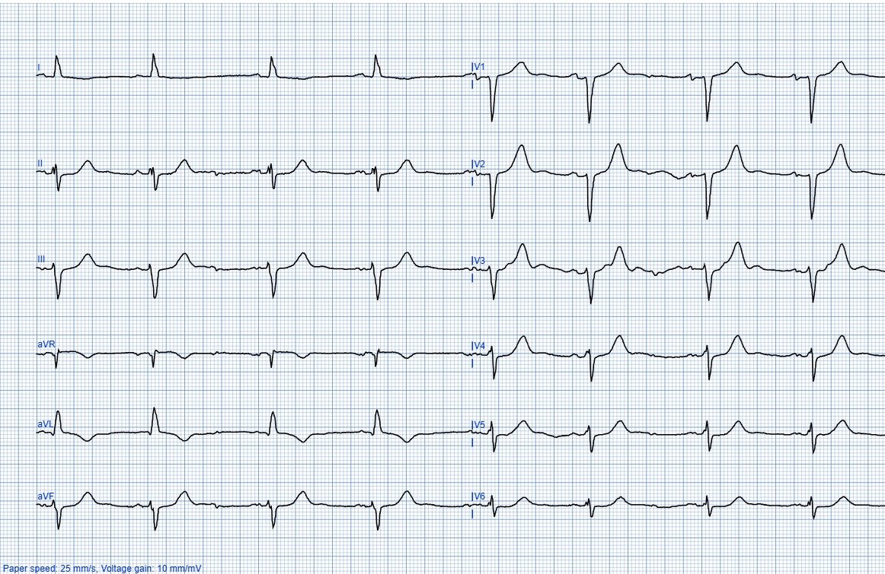
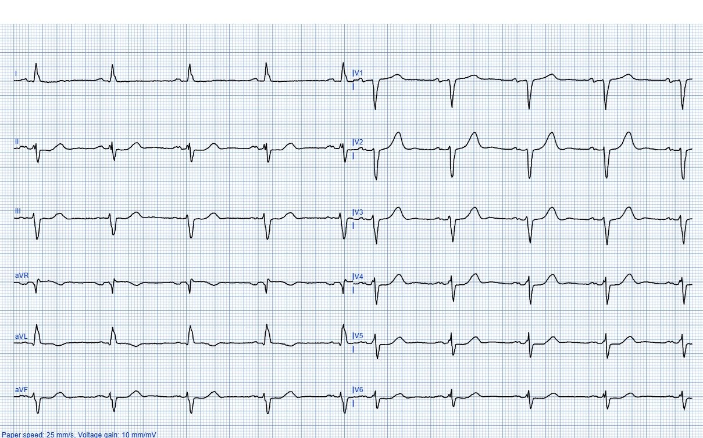
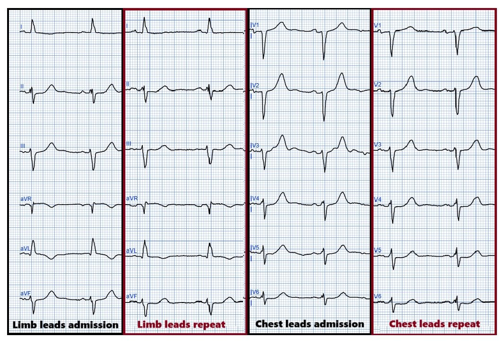
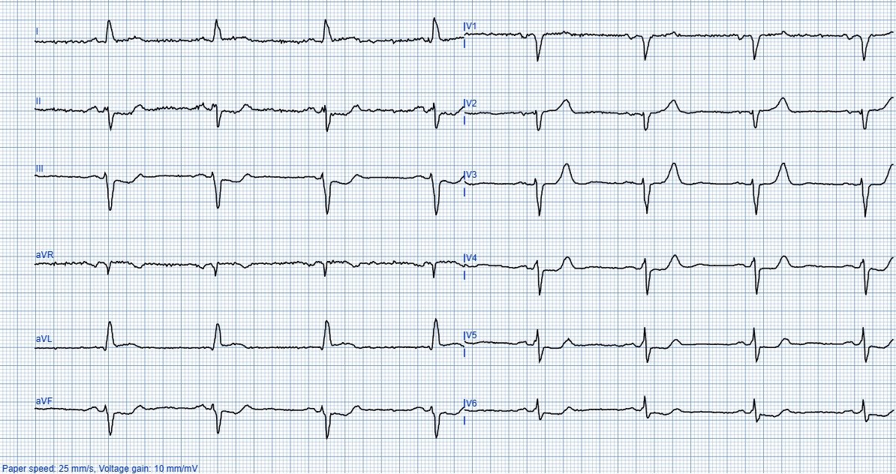
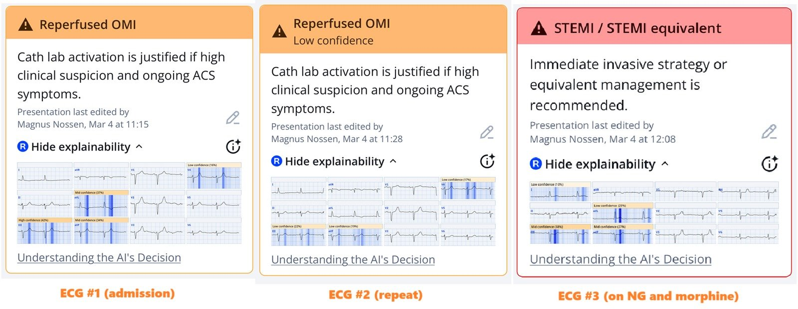
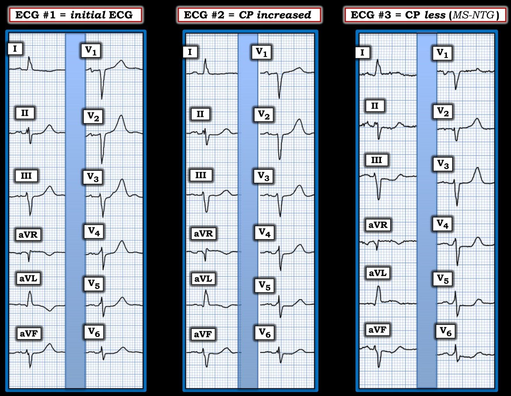

14/03/2025 — Điều gì xảy ra khi dùng morphine cho đau ngực trong hội chứng vành cấp (ACS)? Và giả bình thường hóa sóng T là gì?
Bản dịch tiếng Việt của bài "What happens when you give morphine for chest pain in ACS? And what is pseudo-normalization of T-waves?" – Dr. Smith’s ECG Blog. Giữ nguyên toàn bộ 7 hình ảnh của bản gốc.
Tác giả: Magnus Nossen, có chỉnh sửa của Smith
Bệnh nhân trong ca hôm nay là một nông dân 70 tuổi. Ông có tiền sử bệnh động mạch vành và một lần STEMI hai năm trước, đã được điều trị bằng PCI tiên phát. Ông gọi đội cấp cứu ngoài viện (EMS) vì đau ngực khởi phát cấp tính, cảm thấy không khỏe và mệt mỏi. Ông được cho dùng ASA và NTG ngậm dưới lưỡi rồi được chuyển đến khoa cấp cứu (ED).
Vào thời điểm ghi điện tâm đồ đầu tiên này tại ED, các triệu chứng của ông đang cải thiện


Bệnh nhân không được khám nhanh tại ED vì đó là một ca trực đông bệnh và điện tâm đồ không đạt tiêu chuẩn STEMI.
Sau đó ông bị đau ngực nặng hơn.
Điện tâm đồ dưới đây đã được ghi. Điện tâm đồ ghi lại này có làm sáng tỏ điều gì đang xảy ra không?


Thoạt nhìn, hai điện tâm đồ này trông giống nhau.
Tuy nhiên, có những thay đổi động rất quan trọng giữa hai bản ghi.
Điện tâm đồ đầu tiên, ghi sau khi dùng NTG và trong lúc đau đang giảm, cho thấy các dấu hiệu phù hợp với OMI thành bên và thành sau đã tái tưới máu. Có sóng T đảo ngược ở chuyển đạo I và aVL. Cũng đáng chú ý là sóng T cao ở các chuyển đạo trước tim bên phải. Các sóng T ở phía trước này không phải sóng T tối cấp, mà là hậu quả của tái tưới máu thành sau. (Sóng T tái tưới máu thành sau). Các sóng T ở thành dưới cũng lớn vì chúng là hình ảnh soi gương của tình trạng tái tưới máu thành bên.
Nếu nhìn kỹ hai điện tâm đồ đặt cạnh nhau, bạn có thể thấy thay đổi động. Dưới đây, tôi đã đặt hai điện tâm đồ cạnh nhau để so sánh


Trên điện tâm đồ ghi lại, sóng T ở aVL không còn âm sâu như trên điện tâm đồ lúc nhập viện. Biên độ sóng T ở các chuyển đạo thành dưới và thành trước đang giảm. Điều này, trong bối cảnh đau ngực nặng hơn, là bằng chứng của tình trạng tắc lại động mạch liên quan đến nhồi máu và một OMI đang diễn ra đang hình thành.
Đau ngực đang tăng lên vào thời điểm ghi điện tâm đồ #2, điều này khiến bác sĩ đang chăm sóc bệnh nhân tiến hành đánh giá.
Bệnh nhân được truyền NTG tĩnh mạch và được cho dùng morphine.
Những thay đổi điện tâm đồ kín đáo này đã không được nhận ra.
Sau NTG và morphine, triệu chứng của bệnh nhân cải thiện. Điện tâm đồ dưới đây đã được ghi. Bạn nghĩ gì?


Lúc này, bệnh nhân cho biết triệu chứng đã bớt nặng, dù vẫn còn đau ngực. Sự cải thiện triệu chứng được quy cho việc truyền NTG. Hồ sơ bệnh án của bệnh nhân ghi nhận như sau. “Đau đang cải thiện và các sóng T đảo ngược do thiếu máu cục bộ không còn nữa”.
Nhận định này là sai. Điện tâm đồ cho thấy rõ các thay đổi thiếu máu cục bộ đang nặng lên. Điện tâm đồ #3 cho thấy diễn tiến của tình trạng tắc lại, nay với sóng T dương ở I và aVL (hiện tượng này được gọi là giả bình thường hóa (pseudonormalization)), ST chênh xuống soi gương ở các chuyển đạo thành dưới (với sóng T dạng xuống-lên), và ST chênh xuống (STD) tăng dần ở các chuyển đạo trước tim kèm biên độ sóng T giảm (cũng do tắc lại nguồn cấp máu cho thành sau). Tất cả những điều này có giá trị chẩn đoán OMI thành sau cấp đang diễn ra (chưa tái tưới máu).
Đây là những dấu hiệu OMI rõ ràng nhưng không đạt tiêu chuẩn STEMI.
Với điện tâm đồ như trên, việc đau giảm không thể là nhờ NTG.
Điều đó hẳn phải là tác dụng của morphine đã được dùng.
Những dấu hiệu này không được nhận ra, và vì bệnh nhân (sau khi dùng morphine) cho biết triệu chứng đã cải thiện nên chụp mạch vành khẩn cấp đã không được thực hiện.
Troponin I lúc nhập viện là 54ng/L. Troponin I ghi lại vào sáng hôm sau là 27.890ng/l. Đây đã trở thành một ổ nhồi máu rất lớn.
Dưới đây là kết quả đọc của Queen of Hearts (QoH) cho từng điện tâm đồ trong ca hôm nay. Với điện tâm đồ #1, QoH nhận ra OMI đã tái tưới máu; với điện tâm đồ #2, QoH nhận ra OMI đã tái tưới máu nhưng với độ tin cậy thấp (vì động mạch đang tắc lại). Điện tâm đồ #3 dễ dàng được nhận diện là OMI và mô hình AI khuyến nghị tái thông mạch ngay lập tức


Bệnh nhân trong ca hôm nay đã nhận được chăm sóc chưa tối ưu và bị một ổ nhồi máu cơ tim đáng kể. Cuối cùng ông được chụp mạch vành (CAG), phát hiện một chỗ tắc động mạch mũ và đã được đặt stent. Mặc dù điều trị bị chậm trễ, bệnh nhân vẫn diễn tiến lâm sàng tốt.
Ca này nhấn mạnh rằng sóng T rất quan trọng trong đánh giá thiếu máu cục bộ và các thay đổi động trong hội chứng vành cấp (ACS).
Sóng T đảo ngược trong giai đoạn cấp của ACS thường là một dấu hiệu đáng mừng, cho thấy đã tái tưới máu.
Nếu sóng T đảo ngược (TWI) biến mất hoặc dương trở lại, hãy luôn nghĩ đến tắc lại (giả bình thường hóa)!
Tôi thường thấy các đồng nghiệp lo lắng về sóng T đảo ngược như một dấu hiệu của thiếu máu cục bộ đang tiếp diễn. Nhưng sóng T đảo ngược ở các chuyển đạo nằm trên vùng nhồi máu là một dấu hiệu tốt: dấu hiệu của tái tưới máu.
Nếu đau ngực dai dẳng (không giảm) mà có sóng T đảo ngược, thường có một nguyên nhân thứ phát nào đó gây sóng T đảo ngược, chẳng hạn LVH hoặc phức bộ QRS rộng.
Đây là một bài giảng cũ (2015) nhưng vẫn rất hữu ích về sóng T đảo ngược của Dr. Smith:
40 minute lecture on T-wave inversion (Bài giảng 40 phút về sóng T đảo ngược)
Những điểm cần học:
- Sóng T thường thay đổi động trong ACS và có thể gợi ý tái tưới máu và tắc lại trước cả đoạn ST.
- Ở bệnh nhân có triệu chứng ACS, sóng T đảo ngược biến mất cần được xem là dấu hiệu tắc lại động mạch liên quan đến nhồi máu.
- Hãy thận trọng trước khi dùng morphine vì nó sẽ làm giảm đau.
- Sóng T đảo ngược thường do tái tưới máu gây ra.
Smith: Đừng bao giờ dùng thuốc giảm đau nhóm opiate trừ khi bạn đã quyết định đưa bệnh nhân vào phòng thông tim!! Bạn sẽ che lấp triệu chứng và nghĩ rằng điều trị nội khoa của mình đang có tác dụng giải quyết thiếu máu cục bộ, trong khi nó chỉ đang làm giảm đau!!
Đây là bằng chứng cho điều này:
Opiate có liên quan đến kết cục xấu hơn trong nhồi máu cơ tim.
Xem ca này: A man his 50s with chest pain. What happens when you treat with morphine rather than with reperfusion? (Một người đàn ông ở độ tuổi 50 bị đau ngực. Điều gì xảy ra khi bạn điều trị bằng morphine thay vì tái tưới máu?)
—-Xem nghiên cứu này cho thấy mối liên quan giữa morphine và tử vong trong ACS:
Việc dùng morphine trong ACS liên quan độc lập với tử vong, với tỷ số chênh (odds ratio) là 1.4. Meine TJ, Roe M, Chen A, Patel M, Washam J, Ohman E, Peacock W, Pollack C, Gibler W, Peterson E. Association of intravenous morphine use and outcomes in acute coronary syndromes: Results from the CRUSADE Quality Improvement Initiative (Mối liên quan giữa việc dùng morphine tĩnh mạch và kết cục trong hội chứng vành cấp: kết quả từ Sáng kiến Cải thiện Chất lượng CRUSADE). Am Heart J. 2005;149:1043–1049.
Và một nghiên cứu khác do chúng tôi thực hiện:
—-Bracey, A. Meyers HP. Smith SW. Wei L. Singer DD. Singer A. Association between opioid analgesia and delays to cardiac catheterization of patients with occlusion Myocardial Infarctions (Mối liên quan giữa giảm đau bằng opioid và sự chậm trễ thông tim ở bệnh nhân nhồi máu cơ tim do tắc). Academic Emergency Medicine 27(S1): S220; tháng Năm 2020. Tóm tắt 556.
Kết quả chính: Bệnh nhân OMI STEMI(-)
65 (23.9%) bệnh nhân được phát hiện có nhồi máu cơ tim do tắc (OMI) STEMI(-) vào thời điểm thông tim. 45 bệnh nhân OMI STEMI(-) không dùng opioid trước thông tim có thời gian từ cửa đến bóng (door-to-balloon) là 75 phút, so với 684 phút ở 25 bệnh nhân OMI STEMI(-) có dùng opioid trước thông tim.
Khuyến cáo về ACS nguy cơ cao chỉ được tuân thủ ở 6% bệnh nhân:
Lupu L, Taha L, Banai A, Shmueli H, Borohovitz A, Matetzky S, Gabarin M, Shuvy M, Beigel R, Orvin K, Minha S ’ar, Shacham Y, Banai S, Glikson M, Asher E. Immediate and early percutaneous coronary intervention in very high-risk and high-risk non-ST segment elevation myocardial infarction patients (Can thiệp mạch vành qua da tức thì và sớm ở bệnh nhân nhồi máu cơ tim không ST chênh lên nguy cơ rất cao và nguy cơ cao). Clin Cardiol [Internet]. 2022;Có tại: https://onlinelibrary.wiley.com/doi/10.1002/clc.23781

===================================
BÌNH LUẬN CỦA TÔI, bởi KEN GRAUER, MD (14/3/2025):
===================================
Ca hôm nay nổi bật bởi một thiếu sót quan trọng và cơ bản đã làm chậm trễ đáng kể việc điều trị tối ưu.
- Thiếu sót xảy ra quá ư thường gặp này bắt nguồn từ việc không nhận thức được các thay đổi điện tâm đồ tuần tự cần được dự kiến trong quá trình diễn tiến của một nhồi máu cấp.
- Lý thuyết rất đơn giản: Tùy theo vùng tim bị ảnh hưởng — đoạn ST sẽ chênh lên trong OMI thành dưới, thành bên hoặc thành trước khi động mạch “thủ phạm” bị tắc — và trở về đường nền trên đường tiến tới sóng T đảo ngược khi động mạch thủ phạm mở lại (bất kể động mạch được tái tưới máu bằng PCI hay tiêu sợi huyết — hay tự mở lại).
- Điều ngược lại xảy ra với OMI thành sau (tức là, có ST chênh xuống khi tắc cấp, tối đa ở các chuyển đạo V2,V3,V4 — với đoạn ST trở về đường nền trên đường tiến tới hình thành sóng T cao, nhọn ở các chuyển đạo ngực, tối đa ở các chuyển đạo V2,V3,V4 khi RCA hoặc LCx bị tắc mở lại).
- Điểm MẤU CHỐT: Đối chiếu từng điện tâm đồ liên tiếp với sự hiện diện và mức độ nặng tương đối của đau ngực (CP) tại thời điểm ghi mỗi bản (tức là, bằng một “thang điểm” đau ngực từ 1 đến 10 được ghi vào hồ sơ) — cung cấp một manh mối quan trọng về tình trạng (mở hay đóng) của động mạch “thủ phạm”. Ví dụ, nếu sóng T tái tưới máu thành sau trở nên bớt cao và bớt nhọn cùng lúc đau ngực đột ngột nặng lên — đây có thể là một dấu hiệu đáng lo ngại rằng RCA hoặc LCx “thủ phạm” lại đang tắc (và ST chênh xuống do thiếu máu cục bộ sẽ sớm theo sau). Thiếu sót cơ bản này đã xảy ra trong ca hôm nay.
Xem lại bệnh sử:
Bệnh sử trong ca hôm nay ngay lập tức xếp người đàn ông 70 tuổi này vào nhóm nguy cơ cao hơn đối với một biến cố cấp, đơn giản vì: i) Bệnh nhân có bệnh mạch vành đã biết; và, ii) Ông bị đau ngực mới khởi phát, đủ nặng để gọi EMS.
- Dù chậm trễ vẫn xảy ra ở một ED đông đúc khi số bệnh nhân cấp tính nhiều hơn số bác sĩ chăm sóc họ — chậm trễ không nên xảy ra với một bệnh nhân nguy cơ cao hơn chỉ vì “không đạt tiêu chuẩn STEMI”.
- Trong quá trình đó — không nên dùng morphine để xác định có cần thông tim sớm hay không (như dường như đã xảy ra trong ca này). Morphine lẽ ra có thể được dùng sớm trong ca hôm nay — vì đau ngực mới khởi phát đột ngột ở một bệnh nhân có bệnh mạch vành đã biết và điện tâm đồ ban đầu rõ ràng bất thường thì đã là chỉ định thông tim sớm.
- Một khi bạn biết rằng cần thông tim sớm (vì bệnh sử, dấu hiệu điện tâm đồ và troponin cho thấy tắc mạch vành cấp) — giảm đau ngực trở thành ưu tiên cao. Nhưng giảm đau ngực trước khi xác lập chẩn đoán OMI cấp sẽ che lấp triệu chứng, và chỉ làm chậm trễ PCI cần thiết (như đã xảy ra trong ca hôm nay).
Xem lại các điện tâm đồ liên tiếp:
Để rõ ràng và dễ so sánh — tôi đã đặt cạnh nhau các phức bộ đại diện từ mỗi bản ghi trong 3 bản ghi của ca hôm nay ở Hình 1.
- Như Dr. Nossen đã nêu, mặc dù điện tâm đồ ban đầu không thỏa tiêu chuẩn STEMI dựa trên milimét — bản ghi này thực sự bất thường rõ rệt. Nó có giá trị chẩn đoán OMI sau-bên cấp. Phù hợp với bệnh sử lâm sàng là đau ngực đã giảm vào thời điểm ghi điện tâm đồ #1 — bản ghi ban đầu này đã gợi ý tái tưới máu tự phát vì: i) Có sóng T đảo ngược sâu ở chuyển đạo aVL; ii) Hình ảnh soi gương của dấu hiệu ở aVL này thấy được dưới dạng phần cuối sóng T dương ở mỗi chuyển đạo thành dưới; và, iii) Các chuyển đạo ngực cho thấy sóng T nhọn, cao quá mức, tối đa ở các chuyển đạo V2,V3,V4.
Điểm MẤU CHỐT: Như Dr. Nossen đã nhấn mạnh — trừ khi bạn đặt các điện tâm đồ liên tiếp đang đánh giá cạnh nhau — sẽ quá dễ bỏ sót các thay đổi ST-T động “tố cáo” vốn trở nên rõ ràng khi nhìn vào Hình 1.
- Hãy tự chứng minh rằng đã có thay đổi ST-T động. Hãy nhìn từng chuyển đạo một — và so sánh kích thước tương đối của sóng ST-T ở điện tâm đồ #1 so với ở điện tâm đồ #2.
- Nếu nhìn kỹ — Chẳng phải có sự khác biệt về hình dạng ST-T ở không dưới 10/12 chuyển đạo sao?
- Mặc dù mức độ thay đổi của sóng ST-T giữa 2 bản ghi này có thể không lớn ở một số chuyển đạo — sự nhất quán về hướng của các thay đổi này là không thể nhầm lẫn (tức là, sóng T đảo ngược và sóng T nhọn rõ ràng nổi bật hơn ở điện tâm đồ #1 vào thời điểm bệnh nhân đến ED và đau ngực đang giảm sau NTG).
Giờ hãy nhìn từng chuyển đạo một và so sánh hình dạng ST-T ở điện tâm đồ #2 (lúc đau ngực đang tăng) — với điện tâm đồ #3 (khi đau ngực đã giảm nhờ NTG tĩnh mạch và morphine).
- Chẳng phải có sự khác biệt về hình dạng ST-T ở hầu như tất cả các chuyển đạo sao?
ĐIỀU CỐT LÕI: So sánh từng chuyển đạo giữa 3 bản ghi liên tiếp của ca hôm nay, khi đối chiếu với tình trạng đau ngực lúc có lúc không của bệnh nhân này — kể một câu chuyện thuyết phục về tắc LCx cấp.
- Việc bệnh nhân này giảm đau ngực vào thời điểm ghi điện tâm đồ #1 — phù hợp với các dấu hiệu điện tâm đồ đã mô tả ở trên về tái tưới máu tự phát của OMI sau-bên này.
- Các thay đổi ST-T do tái tưới máu này giảm bớt ở điện tâm đồ #2 — vì bản ghi lại này được ghi vào lúc đau ngực đã quay trở lại (tức là, trên đường tiến tới hình thành ST chênh lên ở chuyển đạo bên cao và ST chênh xuống ở chuyển đạo thành trước do OMI sau-bên).
- Điện tâm đồ #3 phản ánh tiến triển thêm của tình trạng tắc lại động mạch “thủ phạm” — với ST chênh lên nay đã rõ ràng bắt đầu ở chuyển đạo aVL — với ST chênh xuống soi gương trông cấp tính hơn ở các chuyển đạo thành dưới — và các thay đổi trông cấp tính hơn ở khắp các chuyển đạo ngực.
- Ngay cả khi chấp nhận việc không nhận ra OMI cấp sau điện tâm đồ #1 — và không nhận ra OMI cấp sau điện tâm đồ #2 — việc nắm được khái niệm cơ bản về thay đổi điện tâm đồ tuần tự đã bàn ở trên là thiết yếu cho mục tiêu tối ưu hóa việc cứu vớt cơ tim còn sống (và ít nhất là nhận ra OMI cấp và nhu cầu thông tim kịp thời từ điện tâm đồ #3).
- Bài học từ những thiếu sót của ca hôm nay cần được rút ra.

